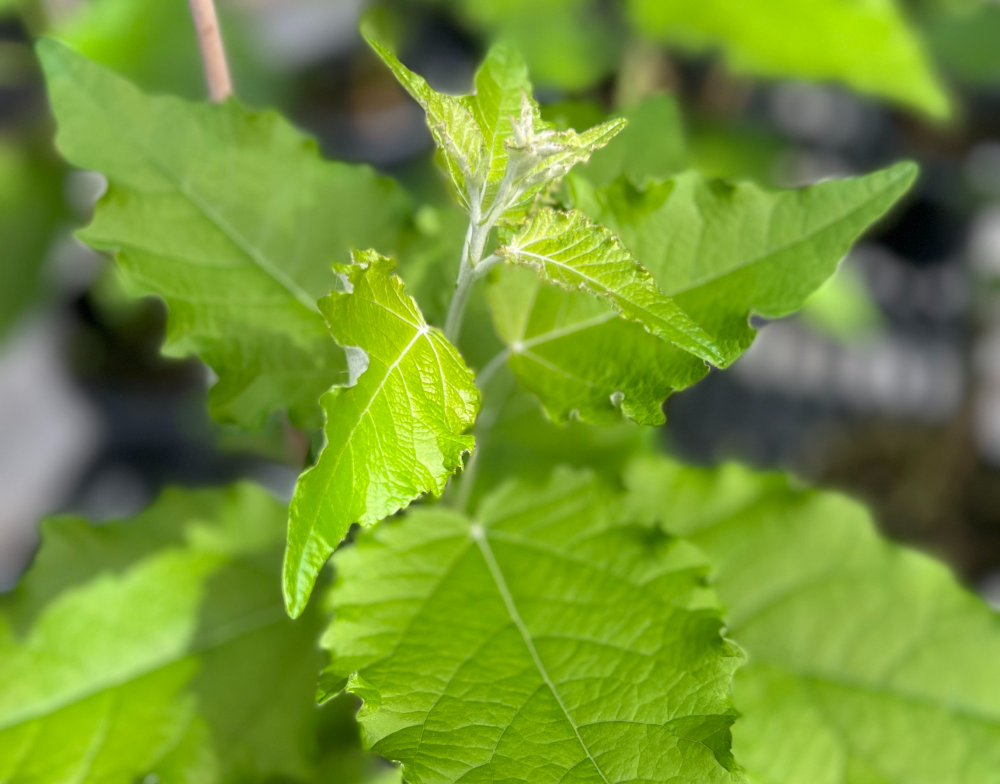

BioPoplar: A tunable chassis for diversified bioproduct production

ADD TEXT
https://news.uga.edu/research-team-receives-15-8m-to-modify-poplar-for-bioproducts/
Project Participants
- Principal Investigator:
- C. Robin Buell, PhD, University of Georgia
- Co-Investigators:
- Christopher Dardick, PhD, USDA-ARS, Co-Investigator
- Wayne Parrot, PhD, University of Georgia
- Robert Schmitz, PhD, University of Georgia
- Patrick Shih, PhD, University of California-Berkeley
- Chung-Jui Tsai, PhD, University of Georgia
- Breeanna Urbanowicz, PhD, University of Georgia
Contact
Robin.Buell@uga.eduFunding
- This project is funded by the U.S. Department of Energy Award number DE-SC0023338